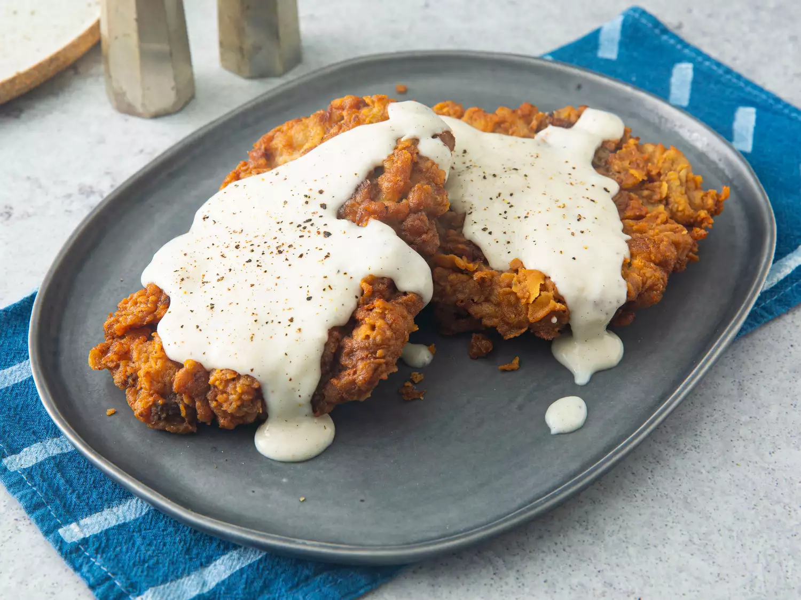

The Best Chicken Fried Steak

This chicken fried steak recipe is one I received from a co-worker about 5 years.
A Southern favorite, these crispy, breaded, tenderized cube steaks drenched in creamy gravy can be served for breakfast or dinner.
It's by far the best chicken fried steak I've ever had.
I've made this numerous times for my picky son and my Southern-raised better half, as well as for other family and friends and each time, I get nothing but rave reviews.